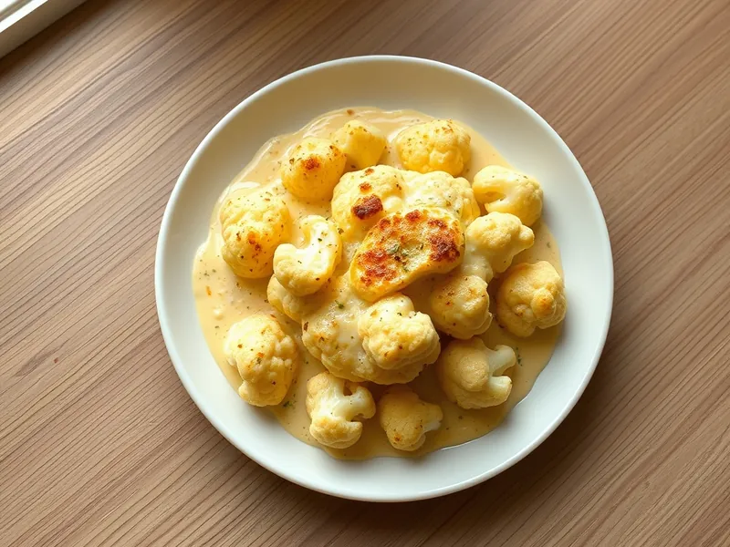

Цветная капуста под сырным соусом в духовке
Английская классика: отварная цветная капуста под сливочно-сырным соусом с румяной корочкой
30 мин3 порц.390 ккал на порциюБ 21 · Ж 23 · У 23Европейская кухня
Открыть в приложении: порции, таймеры, список покупок
Продукты на 3 порц.
- Цветная капуста700 г
- Молоко2 стак.
- Сливочное масло30 г
- Мука пшеничная2 ст. л.
- Сыр твёрдый120 г
- Горчица1 ч. л.
- Мускатный орех по желанию1 щеп.
- Соль1 щеп.
- Вода1500 мл
Как готовить
- Включите духовку на 200 °C (сильный жар). Разберите капусту на соцветия и варите в кипящей подсоленной воде 5 минут, пока нож не начнёт входить с небольшим усилием. Откиньте на дуршлаг.
- Растопите сливочное масло в сотейнике на среднем огне, всыпьте муку и помешивайте 1 минуту.
- Влейте молоко тонкой струйкой, постоянно размешивая венчиком, и варите 4-5 минут, пока соус не загустеет, как жидкая сметана.
- Снимите с огня, вмешайте горчицу, мускатный орех, соль и две трети тёртого сыра до гладкости.
- Выложите капусту в форму, залейте соусом и посыпьте оставшимся сыром.
- Запекайте 12-15 минут, пока сверху не появится золотисто-коричневая корочка и соус не начнёт пузыриться по краям.
Совет. Хорошо обсушите капусту после варки, иначе вода разбавит соус. Молоко лейте постепенно, тогда не будет комочков.